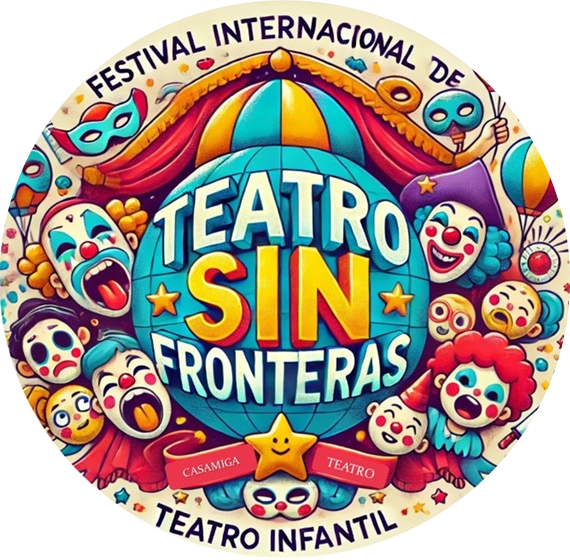
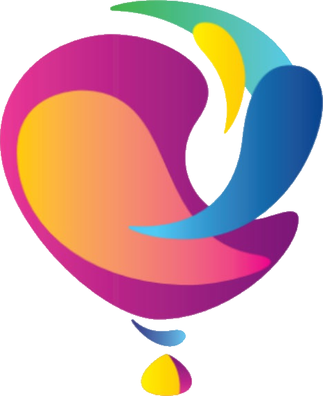
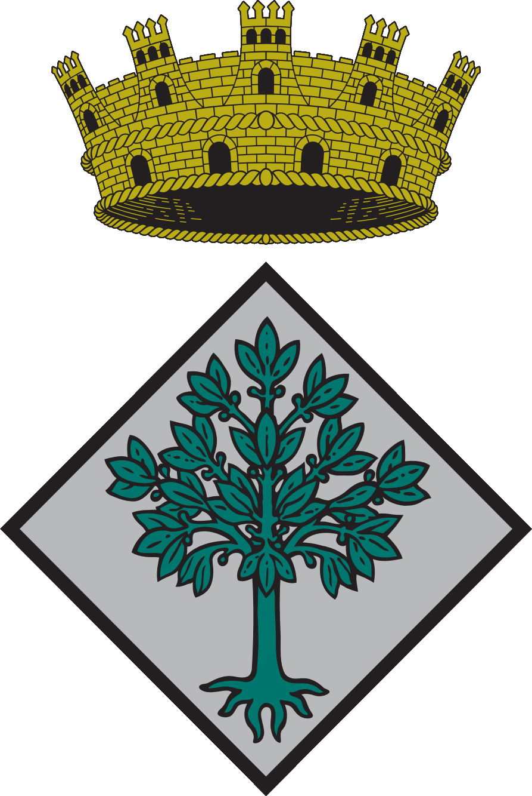

Uniendo el mundo a través del teatro
Festival Internacional de Teatro Infantil
2027
Teatro Municipal de Lloret de Mar, España
Vuestro grupo en el escenario internacional de Europa

Una celebración internacional del teatro que reúne a niños y adolescentes de 6–18 años de diferentes países y culturas
2025: Primer Festival: 10 grupos, 5 idiomas, 400 espectadores, 8 categorías
2026: Segunda edición: más grupos, más países, más emociones
2027: Tercera edición — ¡Únete a la tradición!
Valores: Inclusividad, diversidad lingüística, intercambio cultural
Instagram 👉 @teatro_sinfronteras_festival
Un escenario multicultural, público real, sin barreras lingüísticas
Actuar en un festival internacional de prestigio
Encuentros con grupos de 6 países europeos
Un festival de colaboración, no de competencia
Estatuillas, diplomas, certificados internacionales y un Gran Premio con dotación económica
El arte borra fronteras
10:00–14:00 (6–11 años) y 16:00–20:00 (12–18 años)
Actores profesionales, directores, pedagogos y expertos teatrales
Reconocimientos para diferentes géneros teatrales
TV local y prensa de la región
Aforo completo para cada actuación
Un Gran Premio con dotación económica + Estatuilla del festival
Diplomas
Premios especiales
Edad: 6–18 años
Repertorio: Sin restricciones
Participación garantizada: Todos los grupos que abonan la cuota obtienen un espacio escénico
45 € por participante
450 € para grupos de 10+ participantes
Nikita, Participante (13 años):
«El idioma no importa. En el escenario todos nos entendemos».
Sr. Frederic Guix, Concejal de Cultura:
«Valentía y sinceridad. Son los primeros pasos de los niños en el gran mundo del teatro».
Sr. Adrià Lamelas Martínez, El alcalde de Lloret de Mar:
«Es un honor recibir a directores y niños de toda Europa. Apoyamos el arte que une».

Escenario oficial del festival

Regala a los niños una experiencia que recordarán toda la vida
Asociación CASAMIGA